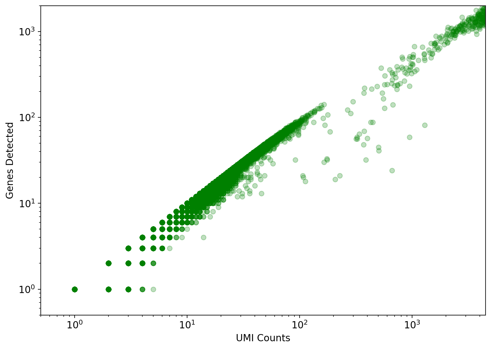
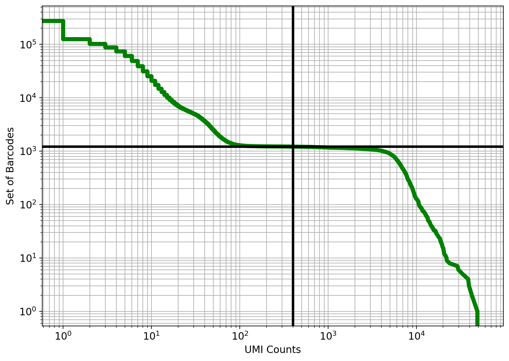
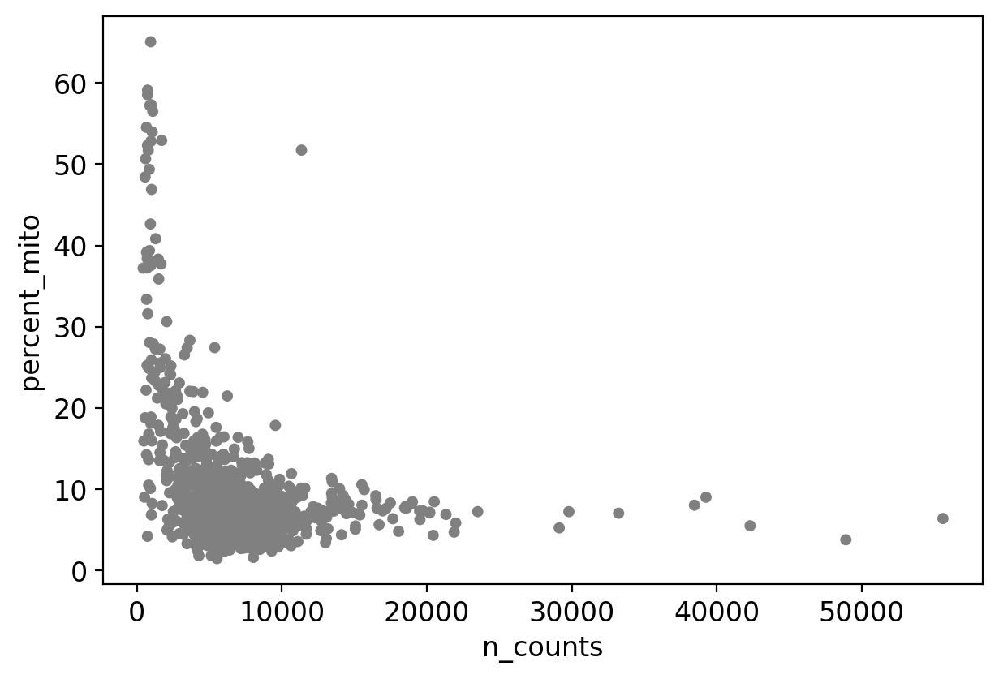
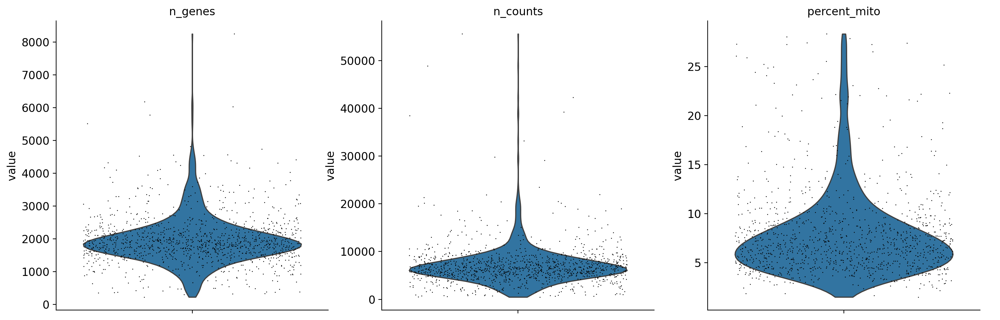
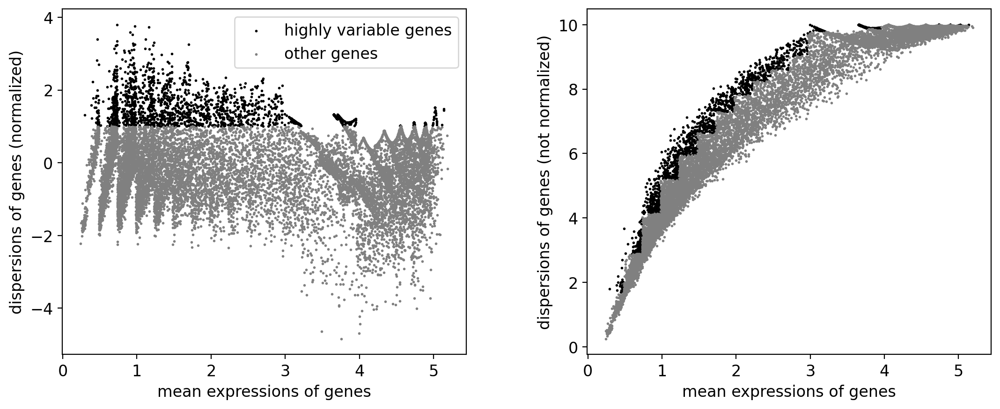
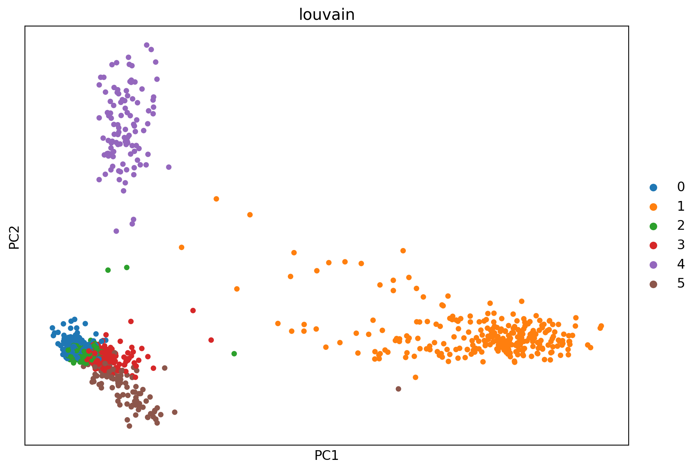
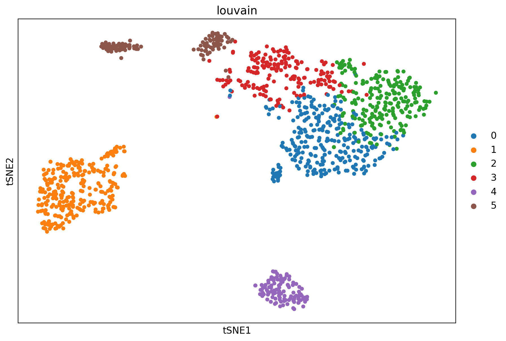
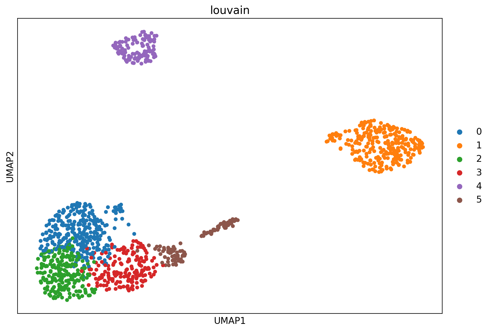

# This is used to time the running of the notebook
import time
start_time = time.time()
Introduction to single-cell RNA-seq: Scanpy (python)
This notebook demonstrates pre-processing and basic analysis of the 1k Human PBMCs dataset (https://www.10xgenomics.com/datasets/1-k-human-pbm-cs-stained-with-a-panel-of-total-seq-b-antibodies-single-indexed-3-1-standard-4-0-0) from 10x genomics. Following pre-processing using kallisto and bustools and basic QC, the notebook demonstrates some initial analysis. The approximate running time of the notebook is about 15 minutes.
The notebook was written by Joseph Rich and Lior Pachter, based off an older version written by Kyung Hoi (Joseph) Min, A. Sina Booeshaghi and Lior Pachter. If you use the methods in this notebook for your analysis please cite the following publications which describe the tools used in the notebook, as well as specific methods they run (these are cited inline in the notebook):
- Melsted P, Booeshaghi AS, Liu L, Gao F, Lu L, Min KHJ, et al. Modular, efficient and constant-memory single-cell RNA-seq preprocessing. Nat Biotechnol. 2021 Jul;39(7):813–8.
- Hjörleifsson KE, Sullivan DK, Swarna NP, Holley G, Melsted P, Pachter L. Accurate quantification of single-cell and single-nucleus RNA-seq transcripts using distinguishing flanking k-mers [Internet]. bioRxiv; 2024 [cited 2024 Jul 10]. p. 2022.12.02.518832. Available from: https://www.biorxiv.org/content/10.1101/2022.12.02.518832v3
- Sullivan DK, Min KH (Joseph), Hjörleifsson KE, Luebbert L, Holley G, Moses L, et al. kallisto, bustools, and kb-python for quantifying bulk, single-cell, and single-nucleus RNA-seq [Internet]. BioRxiv; 2023 Nov [cited 2024 Jan 25]. Available from: http://biorxiv.org/lookup/doi/10.1101/2023.11.21.568164
See the kb-python tutorials site for additional notebooks demonstrating other analyses.
Setup
Install python packages
%%time
!pip install --quiet scanpy python-igraph louvain pybiomart
!pip install --quiet matplotlib
!pip install --quiet scikit-learn
!pip install --quiet numpy
!pip install --quiet scipy
!pip install --quiet kb-python==0.29.1CPU times: user 138 ms, sys: 205 ms, total: 343 ms
Wall time: 8.08 s# Import packages
import anndata
import matplotlib
import matplotlib.pyplot as plt
from matplotlib_inline.backend_inline import set_matplotlib_formats
import numpy as np
import pandas as pd
import scanpy as sc
from sklearn.decomposition import TruncatedSVD
from scipy import sparse, io
matplotlib.rcParams.update({'font.size': 12})
set_matplotlib_formats('retina')Download the scRNA-seq data
%%time
!wget -q https://cf.10xgenomics.com/samples/cell-exp/4.0.0/SC3_v3_NextGem_SI_PBMC_CSP_1K/SC3_v3_NextGem_SI_PBMC_CSP_1K_fastqs.tar
!tar -xf SC3_v3_NextGem_SI_PBMC_CSP_1K_fastqs.tar%%time
!kb ref -d human -i index.idx -g t2g.txt[2024-10-28 16:05:28,005] INFO [download] Downloading files for human (standard workflow) from https://github.com/pachterlab/kallisto-transcriptome-indices/releases/download/v1/human_index_standard.tar.xz to tmp/human_index_standard.tar.xz
100%|████████████████████████████████████████| 138M/138M [00:04<00:00, 34.4MB/s]
[2024-10-28 16:05:32,225] INFO [download] Extracting files from tmp/human_index_standard.tar.xz
CPU times: user 564 ms, sys: 125 ms, total: 689 ms
Wall time: 31.5 sBuilding a custom index with kb ref
See more details in the tutorial on building an index
# # building a standard custom reference from the human genome
# !kb ref -i index.idx -g t2g.txt -f1 f1.fa human_reference_path.fa human_gtf_path.gtf
# # building a custom reference from the human genome with k=55 (where k is the size of each k-mer used in pseudoalignment)
# !kb ref -i index.idx -g t2g.txt -f1 f1.fa -k 55 human_reference_path.fa human_gtf_path.gtf
# # building a reference with the nac workflow (will detect both splice and unspliced transcripts)
# !kb ref -i index.idx -g t2g.txt -f1 f1.fa --workflow=nac -f2 f2.fa -c1 c1.txt -c2 c2.txt human_reference_path.fa human_gtf_path.gtfPseudoaligning the scRNA-seq data to the index with kb count
%%time
# This step runs `kb` to pseudoalign the reads, and then generate the cells x gene matrix in h5ad format.
!kb count -i index.idx -g t2g.txt -x 10XV3 --h5ad -t 2 \
SC3_v3_NextGem_SI_CSP-Labeled_PBMCs_1K_fastqs/SC3_v3_NextGem_SI_CSP-Labeled_PBMCs_1K_gex_fastqs/SC3_v3_NextGem_SI_CSP-Labeled_PBMCs_1K_gex_S1_L002_R1_001.fastq.gz \
SC3_v3_NextGem_SI_CSP-Labeled_PBMCs_1K_fastqs/SC3_v3_NextGem_SI_CSP-Labeled_PBMCs_1K_gex_fastqs/SC3_v3_NextGem_SI_CSP-Labeled_PBMCs_1K_gex_S1_L002_R2_001.fastq.gz \
SC3_v3_NextGem_SI_CSP-Labeled_PBMCs_1K_fastqs/SC3_v3_NextGem_SI_CSP-Labeled_PBMCs_1K_gex_fastqs/SC3_v3_NextGem_SI_CSP-Labeled_PBMCs_1K_gex_S1_L003_R1_001.fastq.gz \
SC3_v3_NextGem_SI_CSP-Labeled_PBMCs_1K_fastqs/SC3_v3_NextGem_SI_CSP-Labeled_PBMCs_1K_gex_fastqs/SC3_v3_NextGem_SI_CSP-Labeled_PBMCs_1K_gex_S1_L003_R2_001.fastq.gz \
SC3_v3_NextGem_SI_CSP-Labeled_PBMCs_1K_fastqs/SC3_v3_NextGem_SI_CSP-Labeled_PBMCs_1K_gex_fastqs/SC3_v3_NextGem_SI_CSP-Labeled_PBMCs_1K_gex_S1_L004_R1_001.fastq.gz \
SC3_v3_NextGem_SI_CSP-Labeled_PBMCs_1K_fastqs/SC3_v3_NextGem_SI_CSP-Labeled_PBMCs_1K_gex_fastqs/SC3_v3_NextGem_SI_CSP-Labeled_PBMCs_1K_gex_S1_L004_R2_001.fastq.gz[2024-10-28 16:06:04,948] INFO [count] Using index index.idx to generate BUS file to . from
[2024-10-28 16:06:04,949] INFO [count] SC3_v3_NextGem_SI_CSP-Labeled_PBMCs_1K_fastqs/SC3_v3_NextGem_SI_CSP-Labeled_PBMCs_1K_gex_fastqs/SC3_v3_NextGem_SI_CSP-Labeled_PBMCs_1K_gex_S1_L002_R1_001.fastq.gz
[2024-10-28 16:06:04,949] INFO [count] SC3_v3_NextGem_SI_CSP-Labeled_PBMCs_1K_fastqs/SC3_v3_NextGem_SI_CSP-Labeled_PBMCs_1K_gex_fastqs/SC3_v3_NextGem_SI_CSP-Labeled_PBMCs_1K_gex_S1_L002_R2_001.fastq.gz
[2024-10-28 16:06:04,949] INFO [count] SC3_v3_NextGem_SI_CSP-Labeled_PBMCs_1K_fastqs/SC3_v3_NextGem_SI_CSP-Labeled_PBMCs_1K_gex_fastqs/SC3_v3_NextGem_SI_CSP-Labeled_PBMCs_1K_gex_S1_L003_R1_001.fastq.gz
[2024-10-28 16:06:04,949] INFO [count] SC3_v3_NextGem_SI_CSP-Labeled_PBMCs_1K_fastqs/SC3_v3_NextGem_SI_CSP-Labeled_PBMCs_1K_gex_fastqs/SC3_v3_NextGem_SI_CSP-Labeled_PBMCs_1K_gex_S1_L003_R2_001.fastq.gz
[2024-10-28 16:06:04,949] INFO [count] SC3_v3_NextGem_SI_CSP-Labeled_PBMCs_1K_fastqs/SC3_v3_NextGem_SI_CSP-Labeled_PBMCs_1K_gex_fastqs/SC3_v3_NextGem_SI_CSP-Labeled_PBMCs_1K_gex_S1_L004_R1_001.fastq.gz
[2024-10-28 16:06:04,949] INFO [count] SC3_v3_NextGem_SI_CSP-Labeled_PBMCs_1K_fastqs/SC3_v3_NextGem_SI_CSP-Labeled_PBMCs_1K_gex_fastqs/SC3_v3_NextGem_SI_CSP-Labeled_PBMCs_1K_gex_S1_L004_R2_001.fastq.gz
[2024-10-28 16:22:54,787] INFO [count] Sorting BUS file ./output.bus to ./tmp/output.s.bus
[2024-10-28 16:23:05,510] INFO [count] On-list not provided
[2024-10-28 16:23:05,511] INFO [count] Copying pre-packaged 10XV3 on-list to .
[2024-10-28 16:23:06,555] INFO [count] Inspecting BUS file ./tmp/output.s.bus
[2024-10-28 16:23:17,382] INFO [count] Correcting BUS records in ./tmp/output.s.bus to ./tmp/output.s.c.bus with on-list ./10x_version3_whitelist.txt
[2024-10-28 16:23:33,621] INFO [count] Sorting BUS file ./tmp/output.s.c.bus to ./output.unfiltered.bus
[2024-10-28 16:23:39,338] INFO [count] Generating count matrix ./counts_unfiltered/cells_x_genes from BUS file ./output.unfiltered.bus
[2024-10-28 16:23:45,046] INFO [count] Writing gene names to file ./counts_unfiltered/cells_x_genes.genes.names.txt
[2024-10-28 16:23:45,461] WARNING [count] 13914 gene IDs do not have corresponding valid gene names. These genes will use their gene IDs instead.
[2024-10-28 16:23:45,491] INFO [count] Reading matrix ./counts_unfiltered/cells_x_genes.mtx
[2024-10-28 16:23:46,030] INFO [count] Writing matrix to h5ad ./counts_unfiltered/adata.h5ad
CPU times: user 18.1 s, sys: 3.52 s, total: 21.7 s
Wall time: 17min 47sRelevant flags for kb count
required arguments:
-iINDEX: Path to kallisto index-gT2G: Path to transcript-to-gene mapping-xTECHNOLOGY: Single-cell technology used (kb --listto view)
positional arguments:
fastqs: FASTQ files. For technologySMARTSEQ, all input FASTQs are alphabetically sorted by path and paired in order, and cell IDs are assigned as incrementing integers starting from zero. A single batch TSV with cell ID, read 1, and read 2 as columns can be provided to override this behavior.
required arguments for nac workflow:
-c1T2C: Path to mature transcripts-to-capture-c2T2C: Path to nascent transcripts-to-capture
optional arguments:
-oOUT: Path to output directory (default: current directory)-tTHREADS: Number of threads to use (default: 8)--strand{unstranded,forward,reverse}: Strandedness (default: seekb --list)--workflow{standard,nac,kite,kite:10xFB}: Type of workflow. Usenacto specify a nac index for producing mature/nascent/ambiguous matrices. Usekitefor feature barcoding. Usekite:10xFBfor 10x Genomics Feature Barcoding technology. (default: standard)--mm: Include reads that pseudoalign to multiple genes. Automatically enabled when generating a TCC matrix.--h5ad: Generate h5ad file from count matrix--cellranger: Convert count matrices to cellranger-compatible format--union: Take the union of all k-mer alignments (default: intersection)
Basic QC
First, the cells x genes matrix is imported into an H5AD-formatted Anndata matrix. Anndata is a convenient format for storing single-cell count matrices in Python.
# import data
adata = anndata.read_h5ad('counts_unfiltered/adata.h5ad')
adataAnnData object with n_obs × n_vars = 281262 × 39546Represent the cells in 2D with PCA
This is one type of embedding in which cells in higher dimensional gene expression space are represented in two dimensions.
# Perform SVD
tsvd = TruncatedSVD(n_components=2)
tsvd.fit(adata.X)
X = tsvd.transform(adata.X)
# Plot the cells in the 2D PCA projection
fig, ax = plt.subplots(figsize=(10, 7))
ax.scatter(X[:,0], X[:,1], alpha=0.5, c="green")
plt.axis('off')
plt.show()Test for library saturation
For each cell we ask how many genes did we detect (or see non-zero expression). The idea is that if we have “saturated” our sequencing library then increasing the number of UMI counts (x-axis) will not yield an appreciable increase in the number of genes detected (y-axis).
# Create a plot showing genes detected as a function of UMI counts.
fig, ax = plt.subplots(figsize=(10, 7))
x = np.asarray(adata.X.sum(axis=1))[:,0]
y = np.asarray(np.sum(adata.X>0, axis=1))[:,0]
ax.scatter(x, y, color="green", alpha=0.25)
ax.set_xlabel("UMI Counts")
ax.set_ylabel("Genes Detected")
ax.set_xscale('log')
ax.set_yscale('log', nonpositive='clip')
ax.set_xlim((0.5, 4500))
ax.set_ylim((0.5,2000))
plt.show()
Examine the knee plot
The “knee plot” was introduced in the Drop-seq paper: - Macosko et al., Highly parallel genome-wide expression profiling of individual cells using nanoliter droplets, 2015. DOI:10.1016/j.cell.2015.05.002
In this plot cells are ordered by the number of UMI counts associated to them (shown on the x-axis), and the fraction of droplets with at least that number of cells is shown on the y-axis. The idea is that “real” cells have a certain number of UMI counts and that a threshold on the UMI counts filters those cells.
#@title Threshold cells according to knee plot { run: "auto", vertical-output: true }
cutoff = 400 #@param {type:"integer"}
knee = np.sort((np.array(adata.X.sum(axis=1))).flatten())[::-1]
cell_set = np.arange(len(knee))
num_cells = cell_set[knee > cutoff][::-1][0]
fig, ax = plt.subplots(figsize=(10, 7))
ax.loglog(knee, cell_set, linewidth=5, color="g")
ax.axvline(x=cutoff, linewidth=3, color="k")
ax.axhline(y=num_cells, linewidth=3, color="k")
ax.set_xlabel("UMI Counts")
ax.set_ylabel("Set of Barcodes")
plt.grid(True, which="both")
plt.show()
print(f"{num_cells:,.0f} cells passed the {cutoff} UMI threshold")1,212 cells passed the 400 UMI thresholdThe knee plot can be used to threshold cells based on the number of UMI counts they contain. The threshold is applied at the “knee”, where there is a sharp dropoff in the number of UMIs per cell. In this example we use the number 3979 based on the publication describing the data.
Filter empty droplets
adataAnnData object with n_obs × n_vars = 281262 × 39546# Filter the cells according to the threshold determined from the knee plot
sc.pp.filter_cells(adata, min_genes=200)
sc.pp.filter_cells(adata, min_counts=knee[num_cells])adataAnnData object with n_obs × n_vars = 1202 × 39546
obs: 'n_genes', 'n_counts'Filtering out by mitochondrial content
mito_ensembl_ids = sc.queries.mitochondrial_genes("hsapiens", attrname="ensembl_gene_id")
mito_genes = set(mito_ensembl_ids["ensembl_gene_id"].values)
adata_base_var_names = adata.var_names.str.split('.').str[0] # Removes minor version from var names
mito_genes_base = {gene.split('.')[0] for gene in mito_genes} # Removes minor version from mito_genes
# Identify mitochondrial genes in adata.var using the stripped version of gene IDs
adata.var['is_mito'] = adata_base_var_names.isin(mito_genes_base)
mito_counts = adata[:, adata.var['is_mito']].X.sum(axis=1)
# Calculate total counts per cell
total_counts = adata.X.sum(axis=1)
# Calculate percent mitochondrial gene expression per cell
adata.obs['percent_mito'] = np.array(mito_counts / total_counts * 100).flatten()
adata.obs['n_counts'] = adata.X.sum(axis=1).A1sc.pl.scatter(adata, x='n_counts', y='percent_mito')
adata = adata[adata.obs.percent_mito < 30]Filter out genes that are not present in any cells
sc.pp.filter_genes(adata, min_cells=3)adataAnnData object with n_obs × n_vars = 1170 × 17140
obs: 'n_genes', 'n_counts', 'percent_mito'
var: 'is_mito', 'n_cells'Visualizing count distributions
Examination of the gene count and UMI count distributions is useful QC to evaluate the quality of the library and how deeply it was sequenced.
sc.pl.violin(adata, ['n_genes', 'n_counts', 'percent_mito'], jitter=0.4, multi_panel=True)
Analysis
In this part of the tutorial, the cells are clustered by Louvain community detection.
Normalize the counts
sc.pp.normalize_per_cell(adata, counts_per_cell_after=1e4)
sc.pp.log1p(adata)Identify highly variable genes
# flavor="cell_ranger" is consistent with Seurat and flavor="suerat" is not consistent with Seurat
sc.pp.highly_variable_genes(adata, min_mean=0.01, max_mean=8, min_disp=1, n_bins=20, flavor="seurat")
sc.pl.highly_variable_genes(adata)
sc.pp.scale(adata, max_value=10)Clustering and visualization
There are many algorithms for clustering cells, and while they have been compared in detail in various benchmarks (see e.g., Duo et al. 2018), there is no univerally agreed upon method. Here we demonstrate clustering using Louvain clustering, which is a popular method for clustering single-cell RNA-seq data. The method was published in
- Blondel, Vincent D; Guillaume, Jean-Loup; Lambiotte, Renaud; Lefebvre, Etienne (9 October 2008). “Fast unfolding of communities in large networks”. Journal of Statistical Mechanics: Theory and Experiment. 2008 (10): P10008.
sc.tl.pca(adata, svd_solver='arpack', mask_var="highly_variable", n_comps=10)%%time
# Cluster the cells using Louvain clustering
sc.tl.pca(adata, svd_solver='arpack', mask_var="highly_variable", n_comps=10)
sc.pp.neighbors(adata, n_neighbors=30, n_pcs=10, knn=True)
sc.tl.louvain(adata)CPU times: user 22.5 s, sys: 10.3 s, total: 32.8 s
Wall time: 923 msIt is useful to revisit the PCA projection with points colored by cluster. Previously we computed the PCA projection directly; here we use a function in ScanPy which does the same.
PCA
# Perform PCA and plot the projection to the first two dimensions, with points colored according to the Louvain clusters.
fig, ax = plt.subplots(figsize=(10, 7))
sc.pl.pca(adata, color='louvain', ax=ax)
The PCA representation is the result a linear map of the data from its ambient dimension, to low dimension (in the case above 2D). While such projections are useful, there are non-linear methods that can capture non-linear geometry in the data.
Visualization
Visualization of the clustered data can be performed through non-linear dimensionality reduction, often performed with UMAP and t-SNE. Our group has demonstrated that both UMAP and t-SNE’s non-linear natures make their interpretability highly limited. To read more, please see the following reference:
- Chari T, Pachter L. The Specious Art of Single-Cell Genomics [Internet]. Genomics; 2021 Aug [cited 2023 Sep 6]. Available from: http://biorxiv.org/lookup/doi/10.1101/2021.08.25.457696
However, for those still interested in these methodss, we demonstrate their use below.
t-SNE
%%time
# Visualize cells with t-SNE. The n_pcs parameter sets the number of principal components to project to prior to
# performing t-SNE
sc.tl.tsne(adata, n_pcs=10)
fig, ax = plt.subplots(figsize=(10, 7))
sc.pl.tsne(adata, color='louvain', ax=ax)
CPU times: user 1min 27s, sys: 267 ms, total: 1min 28s
Wall time: 2.54 sUMAP
%%time
sc.tl.umap(adata)
fig, ax = plt.subplots(figsize=(10, 7))
sc.pl.umap(adata, color='louvain', ax=ax)
CPU times: user 7.11 s, sys: 200 ms, total: 7.31 s
Wall time: 6.03 sDiscussion
This notebook has demonstrated visualization of cells following pre-processing of single-cell RNA-seq data.
# Running time of the notebook
print("{:.2f} minutes".format((time.time()-start_time)/60))14.95 minutes